(project summary)
Post design for a jeweller, built as two campaigns that share one rule: one piece, one light, one line. Circle of Light runs warm — cream, brushed gold and a pendant lifted onto a plinth. Quiet Brilliance runs cold — daylight, crystal and a bracelet laid on stone.
The wordmark sits letter-spaced at the top, the headline in a high-contrast serif underneath, and the product takes the right half of every frame. Sized for feed posts first, then stretched to billboard and storefront banners without redrawing a thing.
(project segments)
social media post design
campaign art direction
banner adaptation
(niche)
jewellery — retail
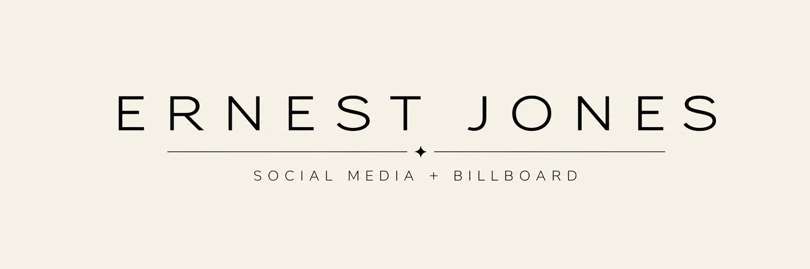
circle of light
Warm campaign — cream, brushed gold and a pendant given the whole frame.
campaign one
quiet brilliance
Cold campaign — daylight, crystal and a bracelet that does the talking.
campaign two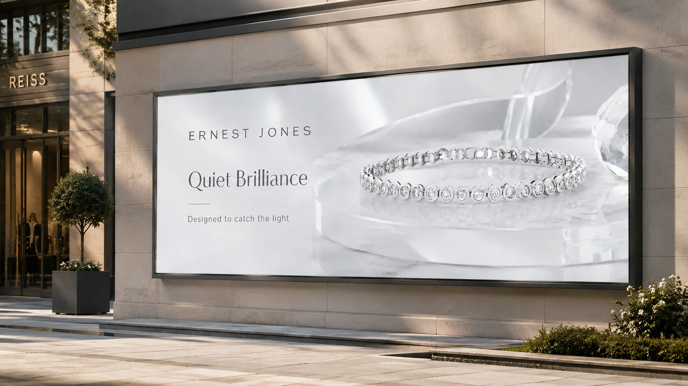
product posts
One piece, one light, one line, run across rings, pendants, bracelets and watches.
feed series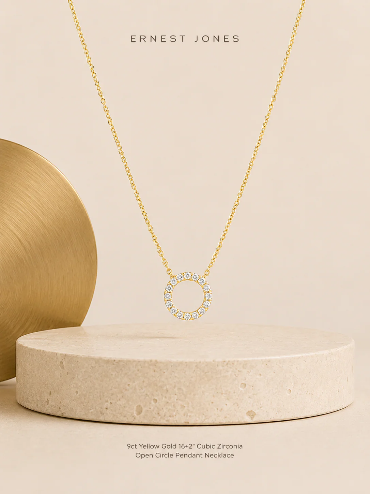
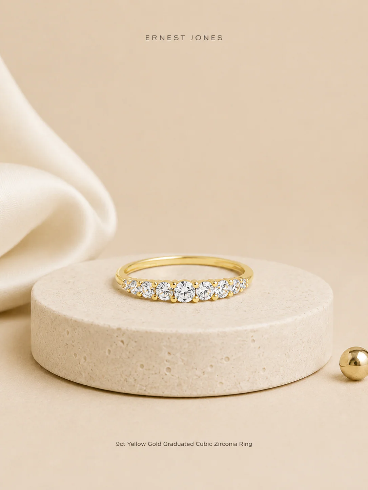
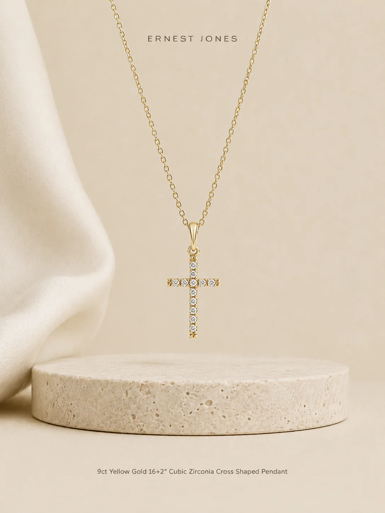
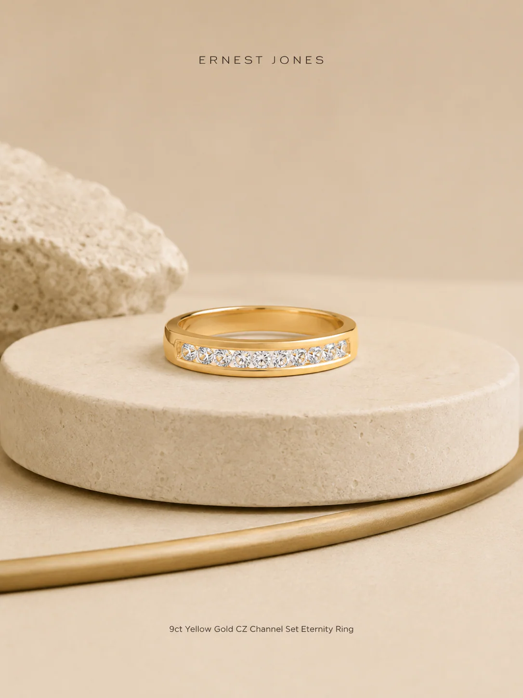
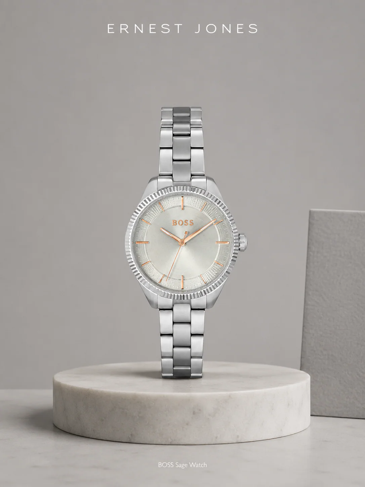
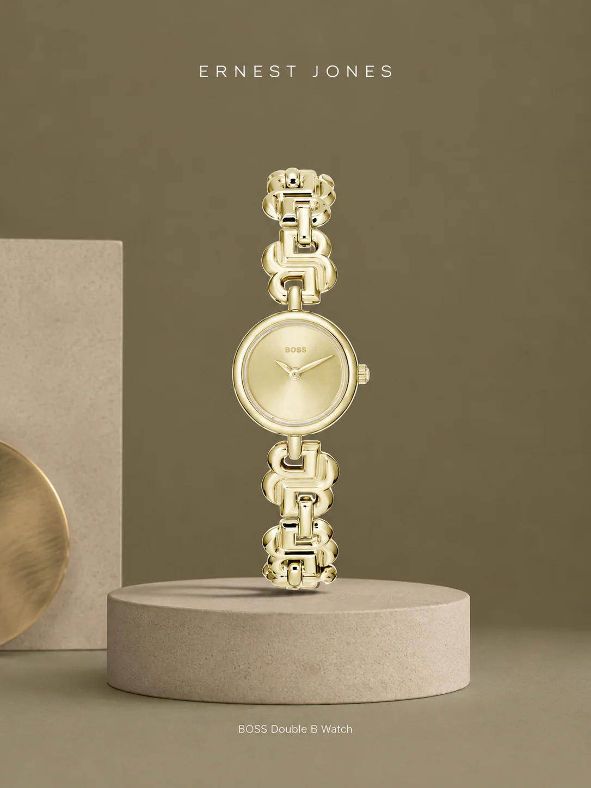
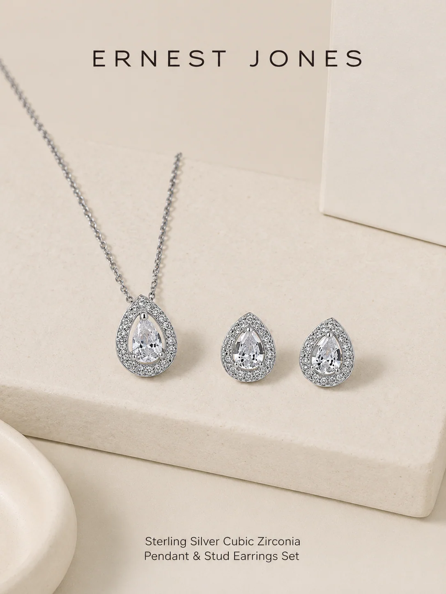
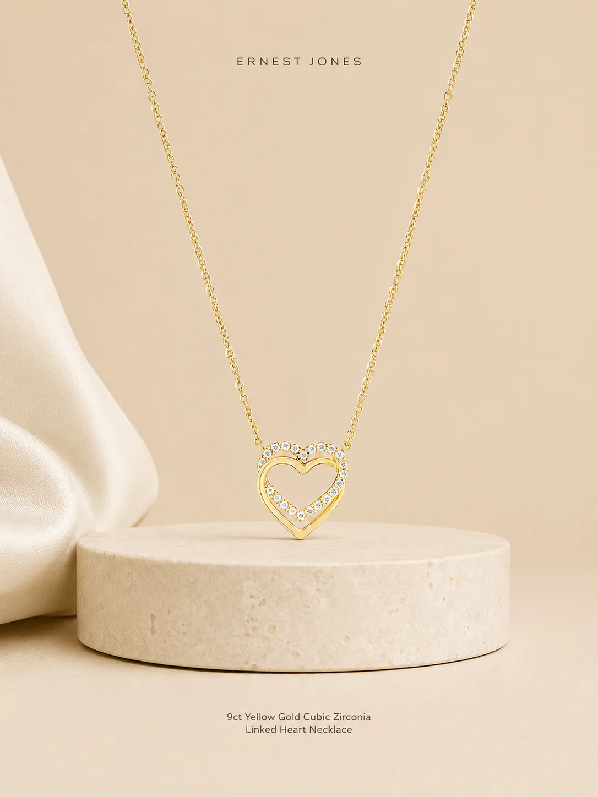
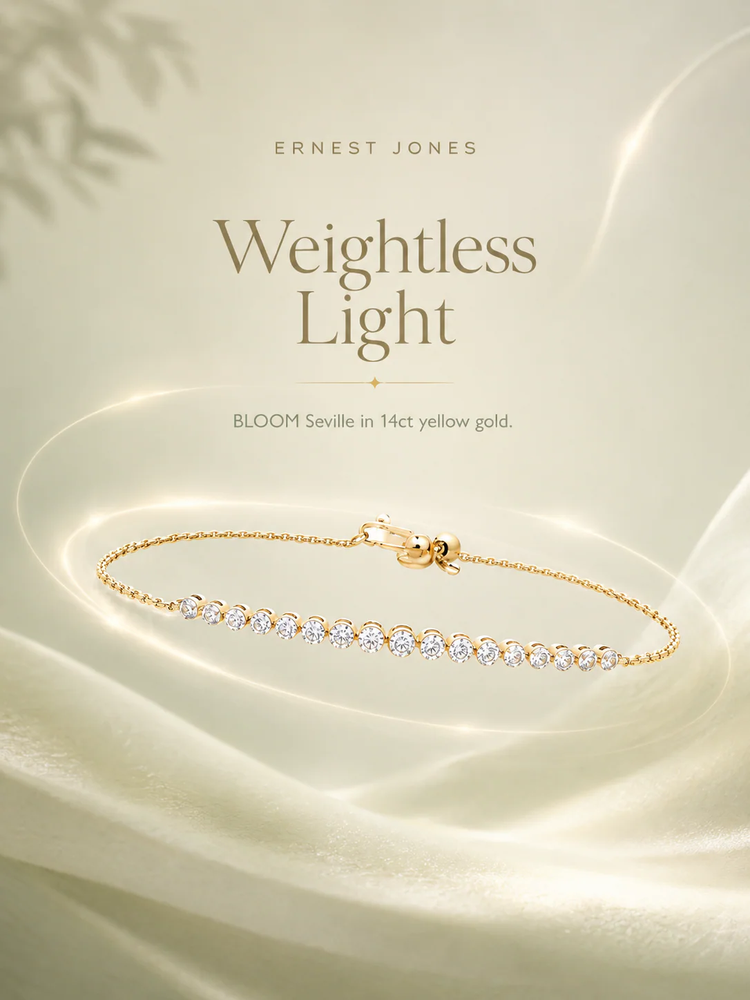
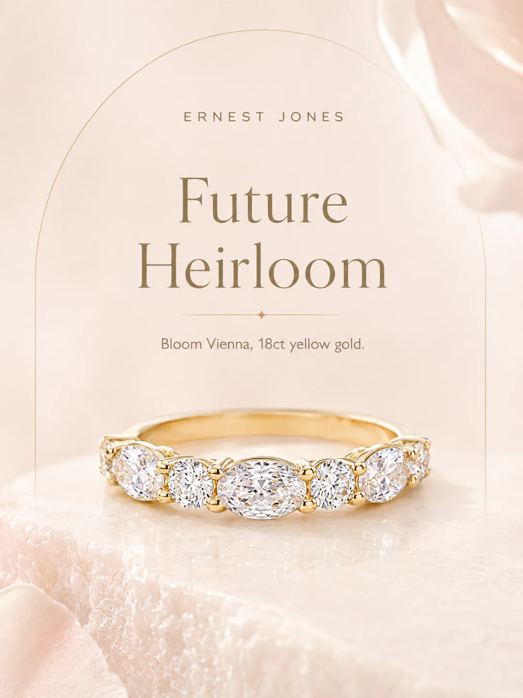